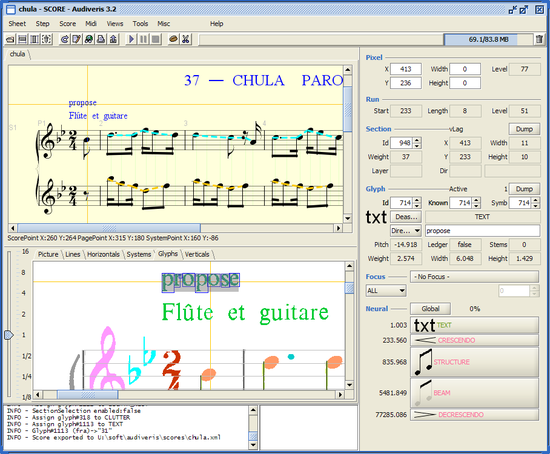

Audiveris main window (click for bigger image)
Project Goals
Audiveris is an Optical Music Recognition (OMR)
module. Starting from the image of a music sheet, it provides high-level
logical music information compliant with the MusicXML definition. Other
tools such as a Midi Sequencer, or a Composition Editor can then read
and update this standard data.
There are already commercial tools in this area but Audiveris is, to our
knowledge, the first Java open-source OMR tool. It is a cross-platform
tool, written entirely in Java, and tested on Windows, Solaris, Linux
and Mac OS.
Audiveris works with printed music sheets only, the task of recognizing
hand-written scores being significantly harder.
|
Current Status
Since versions 3.x, Audiveris is a fully functional music scanner.
Because there may still be remaining errors in the translation, the
program offers the user the ability to guide the translation on the
fly. It can also take advantage of user-supplied data in order to
further train its internal neural network, and thus improve the glyph
recognition task.
More detailed information is available in the provided manuals, but here
are the main phases of the application:
- Detection and correction of potential skew angle of the
sheet,
- Removal of staff lines, detection of systems, staves and
measures,
- Extraction of individual music items, essentially based on
their appearance and their structure,
- Music translation based on the extracted music items, and
essentially driven by music grammar,
- Manual correction of remaining errors,
- Export of logical music information, using the MusicXML format
definition,
- Direct playback using a MusicXML/MIDI interface,
- Finally, any other application able to read / write MusicXML format
can be chained to the output of Audiveris.
There is still room for improvement in this program but the internal
architecture is now fairly stable and robust enough to be used and
augmented by people willing to contribute.
|
Foreseen Contributions
Here are a few ideas of contribution that would make sense and be really
appreciated:
- User Interface is the part which should now benefit the most
from external contributions, since Audiveris initial design was
focused on automatic processing with limited edition capabilities.
Contributions could address code level and/or design level. At least
two directions could be investigated:
- Splitting glyphs: to manually isolate meaningful
glyphs out of a bunch of merged pixels, and then recognize
their shapes.
- Injecting score entities: to forget about
unrecognizable glyphs but manually and directly insert their
translation into the score structure.
- Integrate with a Visual Music Editor for manual correction,
for printing, etc. could be a way to ease user interaction. For
example Xemo would be a natural partnering tool, however the Xemo
site doesn't seem active anymore.
- Find and integrate an open-source OCR (Optical Character
Recognition), preferably in Java, in order to handle the various
text pieces (typically lyrics) which for the time being are simply
discarded. Brenton Partridge has just sketched a first proof of
concept with Google Tesseract OCR, so this feature could be
available soon.
- Investigate support for hand-written scores. This domain
could take benefit of a significant part of Audiveris framework,
however this would really be a project on its own. To be discussed
if anyone is interested by this daunting task.
|
|
Exported MusicXML
|
Download
-
The latest stable release is on the
download area with
binary, source code,
documentation and
training material.
-
The very latest version of any software item is on the CVS
repository.
|
Features
| Input |
| Input image formats: |
All major formats: gif, png, tiff, bmp, etc. |
| Input PDF files: |
Yes |
| Direct scanner input: |
No (Lack of open-source twain interface) |
| Processing |
| Support for handwritten scores: |
No |
| Number of pages per score: |
One (To be improved) |
| Number of staves per system: |
Any Can vary between systems |
| Number of lines per staff: |
5 |
| Support for tablatures: |
No |
| Number of voices per measure: |
Any |
| Customizable parameters: |
Yes For detailed tuning via user interface |
| Integrated learning: |
Yes To recognize new symbol shapes |
| User plugins: |
Yes To allow user extensions |
| Output |
| MusicXML file: |
Yes Using MusicXML version 2.0 |
| Integrated playback: |
Yes At score level and at measure level |
| MIDI file: |
Yes |
|
Documentation
All documentations are bundled with the source archive above. They are
also available on-line here:
|
Release notes |
The chronology of development activities. |
|
Installation |
Informations to set the software up and running. |
|
Example |
Quick start example. |
|
Operation |
How to operate the software as an end-user. |
|
Design |
Key decisions for music extraction and translation. |
|
Implementation |
How the software is organized internally. |
|
Notes |
A collection of tiny notes on Audiveris evolution. |
|
API |
The Javadoc pages of all classes. |
|
Implementation
Audiveris is a pure Java stand-alone application (about 330 classes for
some 100000 lines of Java code)
- Techniques
- Linear Adjacency Graphs (LAG) record pixel
information as a directed graph structure, composed of pixel
contiguous runs organized in sections.
- Sticks are developed above LAGs to take advantage of
the structuring sticks of a music sheet (staff lines,
ledgers and legato signs are such horizontal sticks, while
stems and barlines are vertical sticks).
- A Neural Network allows efficient pattern recognition
as well as training based on user input for continuous
improvement of the tool efficiency.
- Technologies
- Java Advanced Imaging (JAI) for number crunching in
image processing (loading image, accessing pixel data,
rotating the image, etc)
- Swing for user interface, with JGoodies
enhancements in terms of forms and look & feel.
- JFreeChart for charts.
- JAXB 2 for XML persistency.
- Jama for linear algebra in Java.
- Java 6 is the preferred choice for Java, since
JAXB 2 is already integrated in this distribution.
- Companions
|
|
{kind=link}